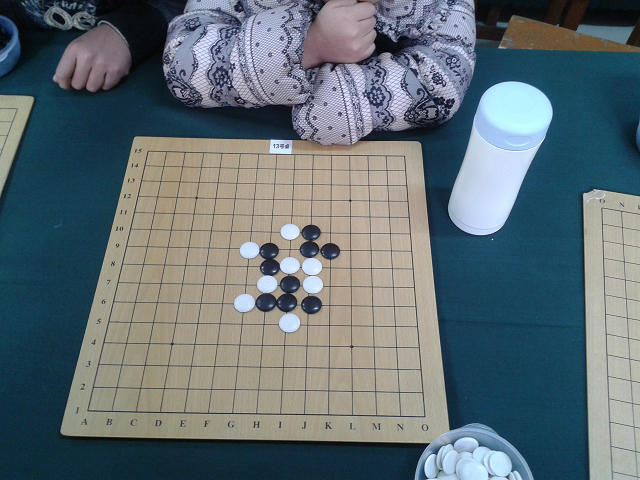

近日观看俩小朋友之间的对局
#1 近日观看俩小朋友之间的对局 作者：黄药师 发表时间：2011-12-24 21:22:30
集训中的一场比赛，执黑的是新手，三年级，今年10月份才学棋，执白的是老队员，棋龄2年，参加过3次全国比赛。
16手之前的顺序不记得了，当时我看到这个局面简单算了一下，黑棋可杀，我一直在旁看三年级的新手能否杀出来。
17手下这里就可以杀了。
实战，小朋友下到这个点。
此时如果白棋18手走下面，黑棋好像就杀不掉了，没有细算。
如果白棋反活三，那么黑棋可以vcf取胜。
然而实战中，黑棋是这么下的
后来我问执黑的小朋友，如果对方反活三，你怎么办？回答：去挡。
再问执白的小朋友，你有没有考虑反活三，回答：有VCF，感觉怎么都杀了，就随便防了一手。
比赛过后，我表扬了一下执黑的小朋友，我觉得一个刚学棋的小朋友，能够算杀的时候不只看局部，而是从整盘棋去看是很不容易的，虽然她的算杀还有漏洞。

［此帖子已被 黄药师 在 2011-12-28 21:19:56 编辑过］
#2 Re:近日观看俩小朋友之间的对局 作者：釣鱼岛岛主 发表时间：2011-12-25 11:00:02
厉害，深度挖掘一下。说不定五子棋界也会出个侯逸凡。#3 Re:近日观看俩小朋友之间的对局 作者：悟石 发表时间：2011-12-28 12:49:40
嗯，很用心哦。
黄老师，你的帖子有个错误，其中有一句：如果黑棋反活三，那么白棋可以vcf取胜。
貌似应该是如果白棋反活三，那么黑棋可以VCF取胜。
［ 黄药师 于 2011-12-28 20:04:24 时花20金币送鲜花一朵］
#4 Re:近日观看俩小朋友之间的对局 作者：悟石 发表时间：2011-12-28 12:57:59
#5 Re:近日观看俩小朋友之间的对局 作者：悟石 发表时间：2011-12-28 13:02:57
好象还有个错误：
前面说：
集训中的一场比赛，执黑的是新手，三年级，今年10月份才学棋，执白的是老队员，棋龄2年，参加过3次全国比赛。
可是后面说：
比赛过后，我表扬了一下执白的小朋友，我觉得一个刚学棋的小朋友，能够算杀的时候不只看局部，而是从整盘棋去看是很不容易的，虽然她的算杀还有漏洞。
［ 黄药师 于 2011-12-28 20:05:51 时花20金币送鲜花一朵］
#6 Re:近日观看俩小朋友之间的对局 作者：黄药师 发表时间：2011-12-28 20:06:25
多谢楼上指出错误，已经改正！
#7 Re:近日观看俩小朋友之间的对局 作者：悟石 发表时间：2011-12-29 23:48:35
呵呵，表客气互相学习！#8 Re:近日观看俩小朋友之间的对局 作者：黄药师 发表时间：2012-7-24 13:30:49
现在回来小吹个牛。
当时对局的俩人恰好似乎这次全少赛俩位新科冠军。
执黑的是乙女冠军，执白的是甲女冠军。